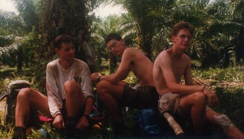

Back to Nakanai '93 Contents Page
Back to Nakanai '93 Contents Page
Lake Hargy is situated 12 kilometres east of Bialla in a forested basin between Mount Galloseulo (a dormant volcano) and the western Nakanais, (5 degrees 20 minute South 151 degrees 8 minutes East). It lies at an altitude of roughly 350 meters and covers approximately 9 square kilometers. The surrounding primary and secondary rainforest extends into the swampy margins of the lake where there are patches of reeds and floating plants. The lake has been cited as a sight of special interest by the West New Britain Provincial Government. There is no habitation near the lake, which is seldom visited by locals.
We set off once more from Bialla, with a week's supply of food and a small number of carriers. After walking for eight hours from the edge of the Hargy plantations through humid secondary forest, our local guide admitted he was lost. Our satellite positioning equipment was difficult to use due to the mountainous surrounding and lack of elevation. A makeshift camp was erected to provide shelter and an uncomfortable night was spent in the pouring rain. On the following morning the guide left to look for the lake again. Meanwhile, Jon had an accident, slicing his knee with a bush knife. Our Medical Officer took charge and stitched Jon up, confining him to camp to allow the wound to heal. When the lake was eventually found (twenty minutes walk away) an advance party moved down before dark, while Jon moved the next day.
After the lake-side camp was established, five days were spent observing the abundant bird life. Paulus meanwhile was able to obtain many excellent insect specimens. This time at Lake Hargy was a useful learning experience, with the team seeing about forty bird species and getting some good sound recordings. Lessons were also learnt about camp arrangements and duties, crucial for longer field stints to come. The highlight of the week was the confirmation that the lake had a crocodile population, after a huge adult was spotted by Nick on the far side of the lake. All swimming and fishing quickly stopped and our local carriers held an all-night fireside vigil to warn away the monster.
Unfortunately we had problems in communication with the local carriers who were keen to spend the whole field period with us, whereas we hoped to have a quiet week with little disturbance to the birds. We were somewhat held to ransom by the locals who threatened to leave us "porter-less" for the return journey. After heated argument, the locals stayed and good relations were restored. It was obvious however that bird activity quickly subsided after the initial occupation of the camp site, showing that even low intensity human disturbance can disrupt natural systems. These findings proved invaluable at later survey sites.
Eleven of the bird species we recorded are restricted-range species, of these, two are endemic to New Britain. See Bird Lists. We also encountered a great variety of invertebrates; several species of frogs were seen or heard; there were many bats; and of course there was the crocodile.

Nigel, Nick and Jon after the walk back from Lake Hargy
Lake Hargy is a place of outstanding natural wealth and beauty, surrounded by a backdrop of primary rainforest and the Nakanai Mountains. In our view the lake would be an excellent site for small scale ecotourism. Access from Bialla is relatively simple (six hour trek over flat terrain) and could be made easier by creation of a permanent track. Site disturbance should be minimised after initial campsite clearance. The construction of a permanent lodge at the lake and small boat for access to other shores of the lake are two ideas that would be worth considering. However, to ensure the maintenance of the Lake in a pristine condition, tourist numbers would need to be carefully controlled. Also the highly seasonal climate would limit site access for several months of the year.
The proximity of Bialla enables supplies and local expertise to be obtained easily. The Bialla people were very cooperative and helpful and were delighted that we took an interest in their lake. It appears that the lake had not been visited for three years before our visit and the locals do not use or depend on the Lake for their way of life. This would prevent any conflict of interest between the locals and tourism and makes the Lake ideal as a tourist spot. The rapidly growing ecotourism market could bring in much needed revenue to Bialla and lessen the dependence of the locals on oil palm for employment.